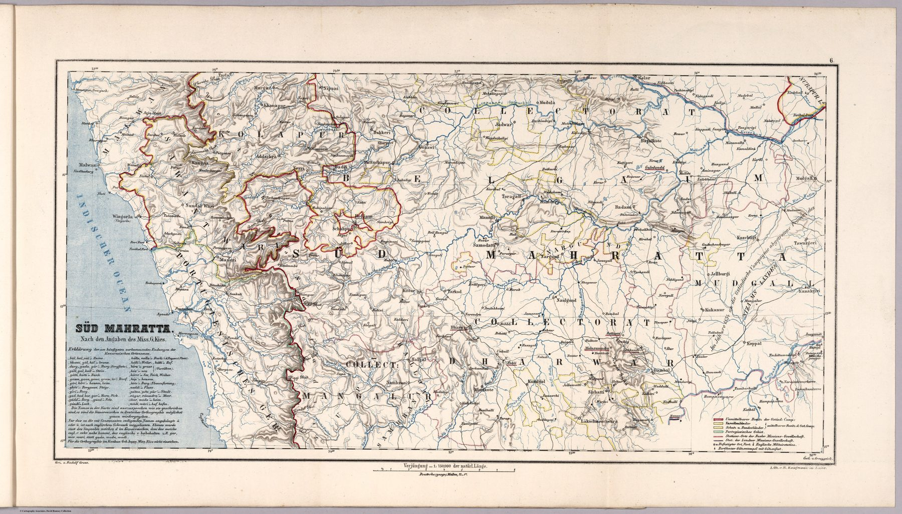

← Home Ground Bombay and Deccan

The mission atlas
Inspector J. Josenhans compiled the Atlas der Evangelischen Missions-Gesellschaft zu Basel from reports supplied by missionaries. This second-edition sheet was engraved in Basel and published in 1859 at a substantially larger scale than general maps of India.
A locally defined field
The map’s extent follows the Mission’s operational geography. Settlements, routes and local divisions matter because they organise travel, stations and prospective congregations. Its regional focus is closer to the ground than the worldwide missionary atlas represented elsewhere in the collection.
Knowledge through presence
Missionaries generated geographic information through long residence and movement, and their map converted the country into a field of intervention, selecting what was useful to an institution seeking durable religious presence.
The gaze
The Basel Mission governed nothing, and its map is the larger-scale for it. Stations, the roads between them and the villages within reach mattered to a mission in a way they did not to an atlas publisher, so the South Maratha country is drawn at a density the general maps did not attempt. Reports from missionaries in residence made that possible; the same reports decided what was worth drawing.
In the Deccan timeline
The Satara raj (1818–1848) · Jagirs and saranjams under the Company (1830s–1860s) · The annexation of Satara (1848) · 1857 in the Deccan (1857–1858)